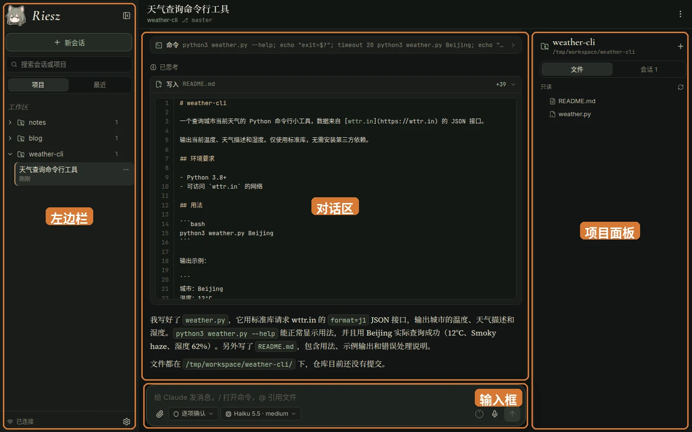

使用指南
这一篇介绍Riesz Manager每个界面和功能怎么用。本文假设你已经部署好Riesz Manager并且能正常登录；如果还没装好，请先看快速上手。各节基本独立，你可以只挑需要的看。
界面总览
登录后进入任意一个会话，窗口分成左、中、右三栏，中间底部是输入框。

| 位置 | 用途 |
|---|---|
| 左边栏 | 顶部是Riesz Manager的标志（点它回到首页）和「新会话」按钮；下面是「搜索会话或项目」搜索框，以及「项目」「最近」两个标签。左下角显示连接状态（「已连接」）和设置按钮（齿轮）。点标志右侧的按钮可以把左边栏收起成窄条，窄条上保留回到首页、展开、新会话和设置按钮。 |
| 对话区 | 顶部显示会话标题、所在项目和git分支；右上角「⋯」是会话菜单，见会话管理。中间是对话内容。 |
| 输入框 | 发消息、运行斜杠命令、引用文件、切换权限模式和模型的地方，见输入框。 |
| 项目面板 | 有「文件」「会话」两个标签。「文件」是当前项目的文件树（只读，带git状态标记），见项目文件；「会话」列出这个项目的全部会话。屏幕不够宽时右边面板会自动收起，点标题栏右侧的按钮可以打开。 |
首页（点左上角的Riesz Manager标志回到这里）上，莉思会按时间跟你打招呼，并说一句现在的情况：有几个会话在运行，或者有会话在等你确认；有会话在等你时，后面会出现「去看看「会话名」」按钮，点它直接跳过去。
如果服务器重启、runner意外停止时有会话正在工作，这些会话会出现在首页的「被中断的会话」里，会话列表里也会在它旁边显示一个小红点。点「恢复」会让Claude先查看中断前做到哪一步，再接着完成；点「忽略」则去掉标记。给这个会话发任何消息，标记也会自动消失。
设置了定时唤醒时，首页下方的「定时唤醒」列出所有定时和下次运行的时间，可以直接开关，点一条打开它所在会话的定时设置。
左边栏的两个标签用来按不同方式查找会话，会话旁边的绿色小圆点表示它正在运行：
- 「项目」：工作区（部署时设置的一个文件夹，例如
~/workspace）下的每个一级文件夹就是一个项目。点项目可以展开它下面的会话；点项目名进入项目页，点会话进入会话。 - 「最近」：所有会话按时间排列（今天、昨天、更早等）。正在运行的会话单独放在最上面的「运行中」一组，用分隔线隔开。
开始一个新会话有两种方式：一是点左边栏的「新会话」，在弹出的列表里「选择项目」，进入项目页后输入第一条消息；二是在左边栏直接点项目名进入项目页，在下方输入框里发消息。发出第一条消息时会话才真正创建，新会话默认沿用你在Claude Code里设置的模型和推理强度。
要新建项目，点左边栏「工作区」右边的新建按钮，或者在「选择项目」列表最下面点「新建项目」，输入文件夹名后点「创建」。工作区里会新建这个文件夹，并打开它的项目页，接着就可以发第一条消息。
对话
对话区完整渲染Claude Code的对话内容，包括Markdown、代码高亮、数学公式、可折叠的思考过程、上下文压缩记录和图片。往上滚动会自动加载更早的消息；离开底部后，右下角会出现回到底部的按钮。
Claude的工具调用会显示成卡片，包括执行的命令和输出、文件修改的diff、新写入的文件、待办清单、子代理、网页抓取、MCP工具等。点卡片标题可以展开或收起详情。
对话里的图片（你发的附件、Claude读到的截图等）点一下会全屏打开。电脑上用滚轮缩放、按住拖动，双击在放大和原始大小之间切换，同一条消息里有多张图时用方向键或两侧的按钮切换；手机上双指缩放、双击放大，左右滑动切换，往下滑或按返回键关闭。右上角可以下载原图。
子代理（Agent）的卡片下面还有一行。子代理运行时，这里显示它的进度：调用了几次工具、用了多少token、正在用哪个工具。点「查看过程」可以打开子代理自己的对话，看它每一步做了什么，运行中会自动刷新。网页里运行的会话还可以「停止」某个子代理（要点两次确认），主会话不受影响；如果子代理在前台运行（主会话正在等它），还可以「转到后台」，让主会话先接着处理你的消息。不过网页里运行的会话，Claude Code通常会直接把子代理放到后台。
开过子代理的会话，在会话列表里，行的右下角有一个子代理按钮，数字是正在运行的和10分钟内刚跑完的子代理数。数字为0时，左边栏（和手机首页）不显示这个按钮，右边面板的「会话」标签里照常显示。点它在会话下面展开子代理列表：这些子代理直接列出，更早跑完的收在「已完成 N 个」里，点它才展开；点其中一个直接打开它的过程。有子代理在运行或刚跑完时，列表会自动展开，之后自动收起；你手动展开或收起过的，以你的选择为准。
Claude工作时，对话底部会有一行带看板娘小人的状态提示（如「斟酌中」「思索中」），并显示已用时间；在等待命令或子任务跑完时会显示「等待命令执行完成」「等待子代理完成」之类，后台任务也会在这里显示。如果一个会话上次运行没有正常结束，底部会显示「已终止 · 上次运行没有完成」。
输入框
输入框支持发送文字、调用命令、引用项目文件、上传附件和语音输入。草稿会自动保存在这台设备上，切换会话或刷新页面都不会丢。
| 操作 | 怎么做 |
|---|---|
| 发送与换行 | 在电脑上按Enter发送，按Shift+Enter换行。在手机上按回车是换行，点右边的发送按钮发送。 |
| 消息排队 | 随时都可以发消息。Claude正在工作时发出的消息会先排队，在合适的时机送达；排队中的消息可以点「撤回」。 |
| 中断任务 | 按Esc或点停止按钮中断当前任务。如果有排队的消息，中断后会立即发送它们（「中断当前任务并立即发送」）。这只对在网页里运行的会话有效；终端里运行的会话要在终端里中断。 |
| 斜杠命令 | 输入/打开Claude Code的斜杠命令列表（包括/compact、/context、/usage、/clear等，以及你安装的技能和插件命令）。用方向键选择，Tab补全，Enter确认，Esc关闭。 |
| 引用文件 | 输入@弹出项目文件列表，选中后会在输入框里插入路径，Claude会读取这个文件。 |
| 翻看历史输入 | 光标在输入框最开头时按↑调出以前发过的消息，光标在最末尾时按↓往回翻。 |
| 添加附件 | 点回形针按钮选择文件，或者直接把图片、文件粘贴或拖进输入框（拖入时会显示「松开以添加附件」）。手机和平板上，回形针旁边还有一个图片按钮，点它直接打开相册选照片，可以一次选多张。 |
| 语音输入 | 点麦克风按钮开始录音，再点一次停止，识别出的文字会填进输入框。如果部署者配置了OpenAI兼容的转写接口，会用服务器转写，否则用浏览器自带的语音识别。用OpenAI自己的接口时，文字会边说边出现在输入框里，停止后定稿；同时仍会保留整段录音，实时转写中途出问题时自动改用整段录音转写，不会丢内容。录音过程中如果你编辑或发送了输入框里的内容，录音会自动结束，文字保持当时的样子。麦克风只能在HTTPS页面使用。 |

/打开斜杠命令列表，包括内置命令和你安装的技能、插件命令。
@搜索并引用项目里的文件。权限模式和模型
输入框下方有两个按钮（在手机上位于输入框上方），分别用来切换权限模式和模型。这些设置随会话保存：会话结束后再恢复时，会沿用上次的模型、推理强度和权限模式。
点左边的按钮或按Shift+Tab可以依次切换权限模式：
| 模式 | 效果 |
|---|---|
| 「逐项确认」 | 每次文件编辑和执行命令都请求许可。 |
| 「自动接受编辑」 | 文件编辑自动通过，执行命令仍需确认。 |
| 「计划模式」 | 只做只读调研，先给出计划，等你审批。 |
| 「自动模式」 | 由分类器判断风险，安全操作自动执行。 |
| 「跳过权限」 | 不再询问任何权限，危险；只有部署者开启后才会出现这一项。 |

点右边的模型按钮，可以选择Claude Code支持的模型，并在下面一排切换推理强度（low、medium、high、xhigh、max，具体可选档位取决于模型）。

确认和提问
当Claude要执行需要许可的操作时，对话底部会出现确认卡片（例如「允许 命令?」），上面有三个按钮：
- 「允许」：同意这一次操作。
- 「允许，且不再询问 …」：同意操作，并把这条规则加入本地设置，以后同类操作不再询问。
- 「拒绝」：拒绝操作，拒绝时可以附上理由告诉Claude。
在「计划模式」下，Claude写好计划后也会在这里请你审批计划。
确认卡片和提问不会一直挡住对话：如果30分钟内没人回应，就会自动拒绝，并告诉Claude你暂时不在，让它换一种办法继续，做不到的部分在最后说明（等多久由部署者的RUNNER_PERMISSION_TIMEOUT决定）。另外，即使在「跳过权限」模式下，Claude Code对一些删除操作仍会要你确认；部署者打开RUNNER_AUTO_ALLOW_REMOVALS后，这类确认会自动放行，只有可能删到系统文件的命令仍然留给你确认。

当Claude使用提问工具向你提问时，底部会出现选项卡片。你可以直接点选项（多选题可以选多个），或者在「其他（自行输入）」里写自己的回答，然后点「提交回答」；不想回答也可以点「跳过」。

上下文用量
发送按钮旁边的小圆圈显示当前会话已经用掉了多少上下文。圆圈内部按比例填色，超过70%变橙色，超过90%变红色。
把鼠标悬停在小圆圈上（手机上点一下）可以看到详细数字，例如「上下文已用 3%」「24k / 967k tokens」「距离自动压缩还有 943k」。这里的百分比是相对于Claude Code自动压缩的触发点来计算的，也就是上下文窗口大小减去自动压缩预留的缓冲区。如果会话刚刚压缩过，会显示「刚压缩过上下文」。

会话管理
点对话区标题栏右上角的「⋯」打开会话菜单：

| 菜单项 | 作用 |
|---|---|
| 「重命名」 | 修改会话标题。你也可以直接点标题栏里的会话标题来改名。 |
| 「归档」 | 把会话收起来。归档只是一个标记，归档后的会话默认隐藏。 |
| 「分叉为新会话」 | 把当前会话复制一份，从这里继续对话，原会话不受影响。 |
| 「复制会话 ID」 | 复制这个会话的ID。 |
| 「复制终端恢复命令」 | 复制claude --resume <ID>命令，方便回到终端里接着用。 |
| 「保持运行」 | 打开后，这个会话的claude进程空闲时不会被关闭，runner重启后也会自动启动，方便其他会话随时联系它；菜单项旁边打勾表示已开启，会话列表里标题旁有图钉，标题栏显示「常驻」。再点一次关闭；用「结束后台进程」也会同时关闭保持运行。每个常驻会话会一直占用一个进程的内存，适合留给少数需要随时在线的会话。 |
| 「定时唤醒」 | 让Riesz Manager按时给这个会话发消息，见定时唤醒。菜单项旁边的数字是这个会话开着的定时数。 |
| 「结束后台进程」 | 仅在会话由网页托管运行时出现。结束后台的claude进程，下次发消息时会自动恢复。 |
| 「预先启动进程」 | 仅在会话还没启动时出现。提前把后台进程跑起来。 |
| 「从终端转到这里」 | 仅在查看终端里运行的会话时出现，见终端里的会话。 |
左右两侧会话列表里，每个会话右边的「⋯」也提供「重命名」「归档」「复制会话 ID」；项目右边的「⋯」可以归档整个项目。要想查看或恢复已归档的内容，可以在「设置 → 通用 → 显示已归档的会话和项目」里打开开关，列表里就会显示带「已归档」标签的项，点它的菜单可以「取消归档」。工作区里已经删除的文件夹不会再显示。
左边栏的项目可以拖动重新排列；右边面板「会话」标签里的会话也可以拖动排序。排列顺序保存在服务器上，所有设备一致。
网页里运行的会话和终端里的Claude Code会话一样，可以互相发消息（Claude Code的跨会话通信）：只要会话的进程在运行，其他会话就能找到它并给它发消息，它也能回复。会话没在运行时收不到消息，可以先用「预先启动进程」启动它，或者打开「保持运行」让它一直在线。
终端里的会话
Riesz Manager里的会话就是机器上~/.claude里的Claude Code会话。你在机器的终端里直接运行的claude会话也会出现在网页列表里（带绿点表示正在运行），点进去可以实时旁观对话；反过来，在网页里继续过的会话，回到终端用claude --resume <会话 ID>也能接着用。
在网页里看一个终端会话时，你可以直接给它发消息：
- 如果终端会话正空闲：输入框会提示「发送后，这个终端会话会转到这里继续」。发出消息后，终端里的那个
claude进程会退出，会话转由网页接管继续运行。你也可以不发消息，直接点会话菜单里的「从终端转到这里」。 - 如果终端会话正在工作：输入框会提示「终端里的会话正在工作，消息会在它空闲后送达」。发出的消息会先排队，等终端里的任务跑完空闲下来，再自动送达并转到网页。
如果你不想打断终端里的会话，可以用会话菜单里的「分叉为新会话」复制一份，在网页里另起一支。
让会话开新会话
一个会话可以自己开新会话，交给Riesz Manager托管，比如把一项独立的任务交给另一个会话去做。这样开出的会话和你在网页上点「新会话」开的完全一样：会自动连接Claude in Chrome，能和其他会话互发消息，需要确认时会在网页上提示你（开了推送的话也会通知你），也能「保持运行」。如果会话直接在终端里运行claude，开出来的就只是一个普通的终端会话，没有这些功能。
工具是rieszctl session。会话在Bash里运行它就行，不需要令牌，也不会打印出来：
# 在当前目录开一个会话，并发第一条消息（-C 可以指定别的目录）
/path/to/RieszManager/rieszctl session new "整理一下 docs/ 里的错别字，改完告诉我改了哪些文件"
# 等它做完这一轮，打印它最后的回复（也可以在 new 后面加 --wait 一步完成）
rieszctl session wait 1a2b3c4d
# 继续给它发消息；它空闲太久被关掉了，也会自动重新开起来
rieszctl session send 1a2b3c4d "再检查一下 README" --wait
rieszctl session list --mine # 当前会话开过的会话
rieszctl session stop 1a2b3c4d # 用完关掉它的进程会话 ID 写前几位就可以。new还可以用-m指定模型，用--mode指定权限模式，用--effort指定思考强度，用--keep让它一直保持运行；消息很长时可以写成-，从标准输入读入。新会话在wait期间需要你确认时，命令会打印一行提示，等你在网页上处理。开新会话的会话会记在新会话的信息里（rieszctl session show里的 started by）。完整用法见rieszctl session --help。
定时唤醒
Riesz Manager可以按时给某个会话发一条消息，比如每天晚上让它整理一次邮件，或者每隔一段时间看一眼任务进度。定时由runner保存和执行，服务器重启、会话进程被关掉都不影响：到点时会话没在运行就先启动它，正在工作就排队，等这一轮做完再送达。
在会话菜单里点「定时唤醒」，可以添加、编辑、暂停和删除这个会话的定时，点▶会立即发送一次。每条定时可以设置：
| 选项 | 说明 |
|---|---|
| 时间 | 「固定时间」：填一天中的几个时刻，例如13:00, 22:30，再选星期几（都不选就是每天）。「每隔一段时间」：填间隔的分钟数，至少5分钟。 |
| 随机推迟 | 到点后再随机推迟至多这么多分钟发送。 |
| 时区 | 「固定时间」按哪个时区算，默认是服务器的时区。 |
| 错过时补跑一次 | 服务器关机等原因错过了时间（晚了10分钟以上）时，打开这项会在恢复后补发一次；不打开就跳过这一次，等下一次。 |
| 发送内容 | 发给会话的消息。其中的{now}会换成发送时的时间。 |
有定时的会话在会话列表里标题旁有一个闹钟图标，对话标题栏显示「定时」，鼠标悬停可以看到下次运行的时间，点它打开定时设置。如果上一次发的消息还在排队没送达，这一次会跳过，不会越积越多。
Claude Code自带的定时（/loop、CronCreate等）只存在于会话的进程里，进程一结束就没有了；需要长期使用的定时请用这里的定时唤醒。会话也可以在Bash里自己设定：
# 每天13:00和22:30，随机推迟至多20分钟
rieszctl session schedule add --at 13:00,22:30 --jitter 20m "例行检查（{now}）"
# 每周一、周四19:40，错过时补跑一次；消息从文件读入
rieszctl session schedule add --at 19:40 --days mon,thu --catch-up --name 周报 - < prompt.txt
# 每2小时
rieszctl session schedule add --every 2h "看看测试跑完没有"
rieszctl session schedule list # 当前会话的定时（--all 列出全部）
rieszctl session schedule pause ID # 暂停；resume 重新打开，run 立即发送，remove 删除不加--session时，定时属于运行这条命令的会话。完整用法见rieszctl session schedule --help。
项目文件
右边面板的「文件」标签展示当前项目的文件树（只读），修改、新增等文件带有git状态标记，被git忽略的文件和文件夹显示为灰色。点任意文件可以打开预览窗口：
- 代码文件：带语法高亮和行号，可以切换「自动换行」。
- Markdown：直接渲染成排版后的文档，可以点「查看源码」看原始文本。
- 图片和PDF：直接在窗口内预览。
- 音频（MP3、WAV、OGG、M4A、FLAC等）：用播放器直接播放，可以拖动进度。
- HTML文件：直接渲染成网页，里面的脚本和外部资源都能运行；页面里的相对链接（CSS、图片、其他页面）会指向同一项目里的文件。你可以点「查看源码」或「在新标签页打开」。预览网页运行在隔离的沙箱里，读不到Riesz Manager的登录状态和数据。
预览窗口右上角还有「复制内容」和「下载」按钮。

推送通知
在「设置 → 通用 → 推送通知」里打开开关，浏览器会请求通知权限；打开后可以点「发送测试通知」试一下。推送设置按设备独立生效，每台需要收通知的设备都要各自打开一次。推送要求网站使用HTTPS，部署相关的说明见部署教程：推送通知。

开启后，以下四类事件会发通知，点通知会直接打开对应的会话：
| 情况 | 通知内容 |
|---|---|
| Claude等你确认 | 标题为「等你确认 · 会话名」，内容如「运行命令：npm test」。同一会话连续出现多个确认时只提醒一次。 |
| Claude向你提问 | 标题为「Claude 有问题问你 · 会话名」，内容是问题本身。 |
| 长任务完成 | 运行超过1分钟的任务完成时推送「任务完成 · 会话名」，内容是用时和最后一条回复的开头。终端里的会话也算。 |
| 进程意外退出 | 推送「会话中断 · 会话名」。 |
你在任何一台设备上正在看的会话不会触发推送。推送内容是端到端加密的，通过浏览器厂商的推送服务送达，即使把浏览器或应用完全关掉也能收到：
- 安卓Chrome：走Google推送服务，需要手机能连上Google服务。部分国产安卓系统还需要在系统设置里允许Chrome后台运行和发送通知。
- iPhone：需要iOS 16.4以上，并且必须先把网页添加到主屏幕、从主屏幕打开应用后再开启推送。
如果设置里显示「通知权限被拒绝了」，需要在浏览器的网站设置里重新允许通知。
莉思玩偶
「莉思」是项目的看板娘。你可以在「设置 → 通用 → 莉思玩偶」里打开桌面玩偶（默认关闭，只影响当前这台设备），并设置「捏的时候发出声音」和玩偶大小（小、中、大）。捏的声音是一段真实捏捏玩具的录音。
这个玩偶的灵感来自DeepSeek Harness（DSH）的插件DeepSeek Balance Whale Widget。

在电脑上，莉思从屏幕右下角探出半身，你可以把她拖到左下角；当输入框伸到她所在的角落时，她会自动站到输入框上方。在手机上，她平时只在屏幕边缘露出半个头，点一下才会完整探出来并弹出面板；你可以沿着屏幕边缘上下拖动她，拖过屏幕中线就能换到另一侧；打字时她会自动藏起来。
点一下莉思会弹出一个面板，从上到下分成三栏：
- 快捷短语：点一条就会填进当前的输入框（插在光标处，或者在已有内容后另起一行）。点这一栏右上角的「编辑」（或者「设置 → 通用 → 莉思玩偶 → 快捷短语」里的「编辑」）可以写多行和调整顺序；短语保存在服务器上，所有设备共用。
- Claude 额度：Claude订阅套餐各个额度窗口（如「本周」）的已用百分比和重置时间。数据来自Claude Code自己的
/usage命令，查询不消耗额度。 - 余额：其他AI服务的账户余额，每个服务一行，目前支持DeepSeek、OpenRouter和NovelAI。NovelAI显示两个数：订阅附带、每月刷新的额度（如「Opus」）和另外购买的Anlas。要由部署者在服务器上配置，见部署教程：其他服务的余额；没有配置时不显示这一栏。余额最多每15分钟查一次，右键菜单里的「刷新用量」会马上重查。
面板最下面是莉思根据用量说的一句话。此外：
- 状态与提醒：她的表情会随状态变化——有会话在运行时托腮思考，一段时间没有会话运行会睡着（飘出z），用量快满时着急。有会话等你确认时，她头上会出现感叹号并提醒你，点提醒里的会话名可以直接跳过去；套餐用量第一次超过80%和95%时也会主动提醒。
- 捏玩偶与右键菜单：按住她可以捏（会压扁回弹，并发出“啾”的一声；电脑上会换成被捏的表情，手机上每次点出来随机换一个表情）。右键点她（手机上长按）可以快速开关声音、调大小、打开面板（「快捷短语」）、「刷新用量」或「收起莉思」。
在手机上用
Riesz Manager针对手机屏幕做了专门的适配。在手机上，首页显示最近的3个会话，点「全部」打开完整的会话列表；会话界面里，权限模式和模型按钮移到了输入框上方，发送按钮固定在最右边。

- 滑动手势：在屏幕任意位置向右滑打开左侧会话列表，向左滑打开右侧项目面板；有抽屉打开时，往回滑会先关闭它。从代码块等能横向滚动的地方开始的滑动不会触发抽屉。
- 返回手势：按系统返回键或做返回手势时，如果有窗口打开（设置、文件预览、菜单、抽屉等），会先关闭最上面的窗口；没有窗口时才返回上一页。
- 安装成应用（PWA）：在Android上打开「设置 → 通用」点「安装」（或用浏览器菜单里的“添加到主屏幕 / 安装应用”）；在iPhone上用Safari的分享菜单选“添加到主屏幕”。
- 自动更新：服务器部署新版本后，应用从后台切回来时会自动刷新到新版本；如果你正在打字，则会先提示「有新版本」，等你下次切到后台时再更新。
设置页
点左边栏左下角的齿轮按钮打开设置，里面有三个标签：
- 「通用」：管理「推送通知」、「显示已归档的会话和项目」、「莉思玩偶」、（浏览器支持安装时）「安装应用」，底部显示当前工作区路径和登录账号，以及「退出登录」按钮。
- 「安全」：管理两步验证。点「开始设置」，用验证器应用（Google Authenticator、1Password、Aegis等）扫描二维码或手动输入密钥，再输入6位验证码点「启用」；随后会显示8个恢复码，请务必保存好。已启用两步验证时，可以在这里「重新生成恢复码」或「关闭两步验证」（需要输入当前验证码或一个恢复码；如果部署者在服务器配置中要求必须启用两步验证，则不能关闭）。
- 「设备」：「已登录的设备」列出所有登录中的会话（含浏览器、系统、IP、最近活动时间），你可以让某台设备退出，或点「退出其他所有设备」；下方还会列出「最近的登录尝试」。
如果弄丢了验证器，登录时可以点「使用恢复码」，输入一个恢复码登录（每个恢复码只能用一次）。如果验证器和恢复码都没了，部署者可以在服务器上执行./rieszctl reset-totp关闭两步验证，或执行./rieszctl revoke-sessions让所有设备重新登录，详见账号与两步验证。
快捷键
| 按键 | 作用 |
|---|---|
| Enter | 发送消息（电脑上）；在命令或文件列表中为确认选择 |
| Shift+Enter | 在输入框中换行 |
| Esc | 中断当前任务并发送排队的消息（仅限网页里运行的会话）；在命令或文件列表中为关闭列表 |
| Shift+Tab | 依次切换权限模式 |
/ | 打开斜杠命令列表 |
@ | 打开文件引用列表 |
| ↑ / ↓ | 光标在输入框开头按↑、在末尾按↓翻看历史输入；在命令或文件列表中为上下选择（也可用Ctrl+P / Ctrl+N） |
| Tab | 在命令或文件列表中补全当前选中项 |
常见问题
页面提示「宿主机运行器未连接」怎么办？
这说明服务器上的runner服务没有在运行。请让部署者在服务器上执行./rieszctl runner status检查状态，详见排错。
为什么我的终端会话突然退出了？
当你在网页里给一个空闲的终端会话发消息时，这个会话会自动转到网页里继续，终端里的进程就会退出。如果你想回到终端继续用，可以点会话菜单里的「复制终端恢复命令」拿到claude --resume命令。
网页里的会话放了一段时间，后台进程怎么没了？
网页里的会话长时间空闲后，后台的claude进程会自动结束以节省服务器资源（空闲多久由部署者的RUNNER_IDLE_TIMEOUT决定）。还有命令在后台运行的会话不算空闲，不会被结束。下次你在输入框发消息时它会自动恢复，不影响对话记录和上下文。如果希望某个会话一直在线，比如方便其他会话随时给它发消息，可以在会话菜单里打开「保持运行」。
为什么语音输入按钮不能用？
浏览器的麦克风接口只在HTTPS页面下可用（请参考配置HTTPS）。另外，如果部署者没有配置服务器端的转写接口，语音输入依赖浏览器自带的语音识别，部分浏览器不支持这一功能。
为什么收不到推送通知？
请先检查「设置 → 通用」里的推送开关已经打开，并且点「发送测试通知」能收到。在安卓手机上，Chrome需要能连接Google服务，并且要在手机系统设置里允许浏览器后台运行和发通知；在iPhone上，需要先用Safari把网页添加到主屏幕，从主屏幕打开应用后再开启推送。